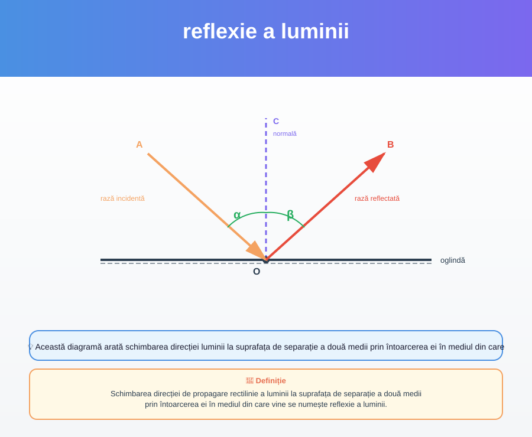
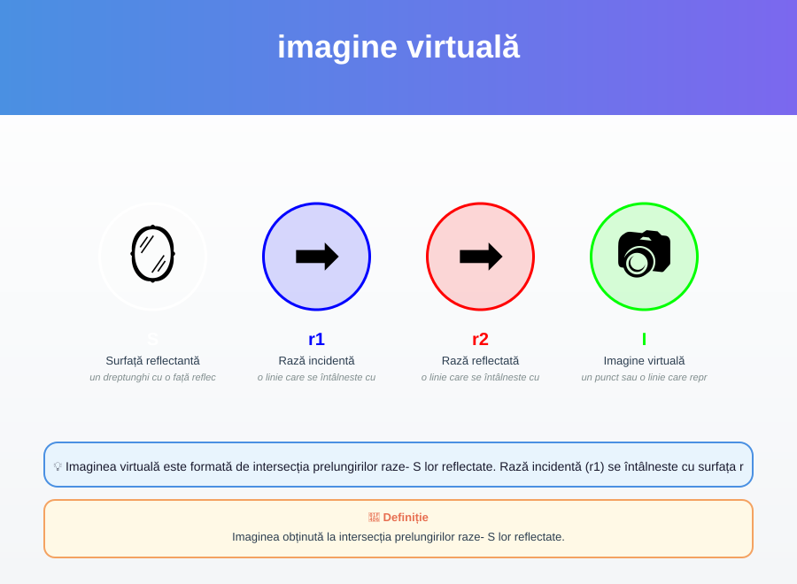

oglindă plană
Suprafața plană, netedă și lucioasă care reflectă bine lumina se numește oglindă plană.
Oglinda plană este o suprafață netedă și lucioasă care reflectă bine lumina. Luminozitatea (L) se reflecțiază de această suprafață.
p. 6
Schimbarea direcției de propagare rectilinie a luminii la suprafața de separație a două medii prin întoarcerea ei în mediul din care vine se numește reflexie a luminii.
Această diagramă arată schimbarea direcției luminii la suprafața de separație a două medii prin întoarcerea ei în mediul din care vine, ceea ce se numește reflexie a luminii.
p. 6Suprafața plană, netedă și lucioasă care reflectă bine lumina se numește oglindă plană.
Oglinda plană este o suprafață netedă și lucioasă care reflectă bine lumina. Luminozitatea (L) se reflecțiază de această suprafață.
p. 6
Imaginea obținută la intersecția prelungirilor raze- S lor reflectate.
Imaginea virtuală este formată de intersecția prelungirilor raze- S lor reflectate. Rază incidentă (r1) se întâlneste cu surfața reflectantă (S), este reflextată ca rază reflectată (r2) și această rază reflectată se extinde până la formarea imaginei virtuale (I).
p. 9